Load necessary R packages
All necessary packages should already be installed. However, if any
are missing, you can install them using the
install.packages() function in R:
# Main spatial packages
install.packages("sf")
install.packages("terra")
# tmap dev version
install.packages("tmap", repos = c("https://r-tmap.r-universe.dev",
"https://cloud.r-project.org"))
# leaflet for dynamic maps
install.packages("leaflet"
# tidyverse for additional data wrangling
install.packages("tidyverse")
Load packages:
## Linking to GEOS 3.11.0, GDAL 3.5.3, PROJ 9.1.0; sf_use_s2() is TRUE
## terra 1.8.15
library(tmap)
library(leaflet)
library(tidyverse)
## ── Attaching core tidyverse packages ──────────────────────── tidyverse 2.0.0 ──
## ✔ dplyr 1.1.4 ✔ readr 2.1.5
## ✔ forcats 1.0.0 ✔ stringr 1.5.1
## ✔ ggplot2 3.5.1 ✔ tibble 3.2.1
## ✔ lubridate 1.9.4 ✔ tidyr 1.3.1
## ✔ purrr 1.0.2
## ── Conflicts ────────────────────────────────────────── tidyverse_conflicts() ──
## ✖ tidyr::extract() masks terra::extract()
## ✖ dplyr::filter() masks stats::filter()
## ✖ dplyr::lag() masks stats::lag()
## ℹ Use the conflicted package (<http://conflicted.r-lib.org/>) to force all conflicts to become errors
# Set tmap to static maps
tmap_mode("plot")
## ℹ tmap mode set to "plot".
Layer 1: Soil fertility
Load the soil landscapes dataset (soil_landscapes) along
with the polygon shapefile representing the study area boundary
(study_area_bnd):
# Read in shapefiles
soil_landscapes <- read_sf("./data/data_koala/vector/soil_landscapes.shp")
hunter_bnd <- read_sf("./data/data_koala/vector/study_area_bnd.shp")
# Print the first rows of the soil landscapes layer
head(soil_landscapes)
The soil landscapes layer includes four attribute columns, the forth
(PROCESS) representing the geomorphic type of landscape on
which the soils have formed.
Plot the soil_landscapes layer, colouring each polygon
according to the value of the PROCESS column:
# Plot data for quick visual inspection
soils_map <- tm_shape(soil_landscapes) +
tm_fill("PROCESS") +
tm_layout(frame = FALSE, legend.text.size = 0.5, legend.title.size = 0.5)
# Plot study area bnd
soils_map + tm_shape(hunter_bnd) + tm_borders("black")
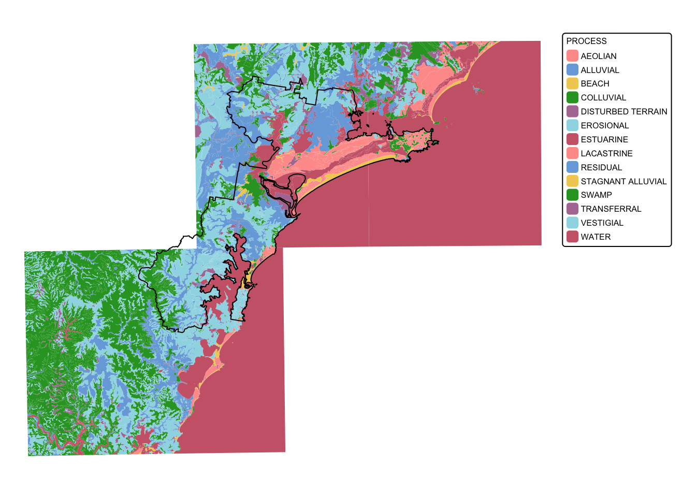
To clean up the data, we will first crop soil_landscapes
to the extent of the study area (i.e., hunter_bnd). Next,
we will isolate those soil landscapes that can sustain koala feed tree
species. These soils include those formed on Quaternary alluvial,
colluvial, and aeolian deposits, and those formed in swampy areas.
To crop the soil_landscapes layer will use the
sf function st_intersection():
# Intersect the two polygon layers
soil_landscapes_bnd <- st_intersection(soil_landscapes, hunter_bnd)
## Warning: attribute variables are assumed to be spatially constant throughout
## all geometries
# Plot data for quick visual inspection
tm_shape(soil_landscapes_bnd) +
tm_fill("PROCESS") +
tm_layout(frame = FALSE, legend.text.size = 0.6, legend.title.size = 0.6)
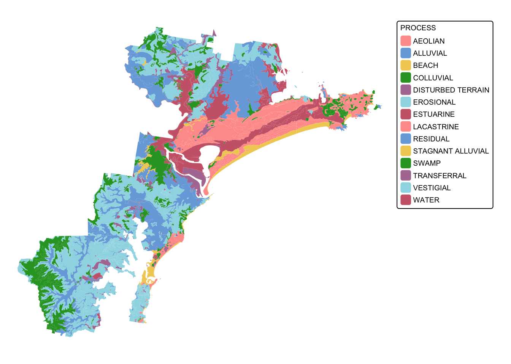
Next we extract the soil landscapes of interest. We use the
dplyr function filter():
# Create list of PROCESS values of interest
soils <- c("AEOLIAN", "ALLUVIAL", "COLLUVIAL", "SWAMP", "RESIDUAL", "ESTUARINE")
# Filter data and extract polygons of interest
soil_landscapes_filter <- filter(soil_landscapes_bnd, PROCESS %in% soils)
# Plot study area bnd first as it has larger extent
soils_map2 <- tm_shape(hunter_bnd) + tm_borders("gray")
# Add soils
soils_map2 + tm_shape(soil_landscapes_filter) +
tm_fill("PROCESS") +
tm_layout(frame = FALSE, legend.text.size = 0.6, legend.title.size = 0.6)
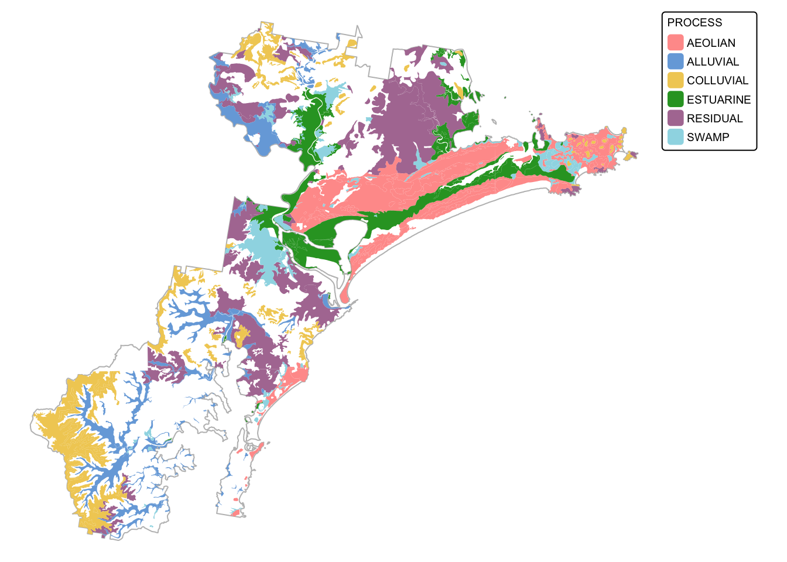
The next chunk of code adds a new attribute column (called
SCORE) and uses the dplyr function
mutate() to assign values based on another column (in this
case PROCESS). We assign the value 100 to each polygon
where PROCESS equals “AEOLIAN”, “ALLUVIAL”, “COLLUVIAL”,
“SWAMP”, “RESIDUAL”, or “ESTUARINE”.
# Add a new numeric field 'SCORE' based on conditions applied to 'PROCESS'
# Here, we assign:
# 100 if 'PROCESS' equals "AEOLIAN", "ALLUVIAL", "COLLUVIAL", ...
# 0 for all other cases
soil_landscapes_filter <- soil_landscapes_filter %>%
mutate(SCORE = case_when(
PROCESS == "AEOLIAN" ~ 100,
PROCESS == "ALLUVIAL" ~ 100,
PROCESS == "COLLUVIAL" ~ 100,
PROCESS == "SWAMP" ~ 100,
PROCESS == "RESIDUAL" ~ 100,
PROCESS == "ESTUARINE" ~ 100,
TRUE ~ 0 # default numeric value for unmatched cases
))
# Plot study area bnd first as it has larger extent
soils_map3 <- tm_shape(hunter_bnd) + tm_borders("gray")
# Add soils
soils_map3 + tm_shape(soil_landscapes_filter) +
tm_fill("SCORE") +
tm_layout(frame = FALSE, legend.text.size = 0.6, legend.title.size = 0.6)
## The visual variable "fill" of the layer "polygons" contains a unique value. Therefore a discrete scale is applied (tm_scale_discrete).
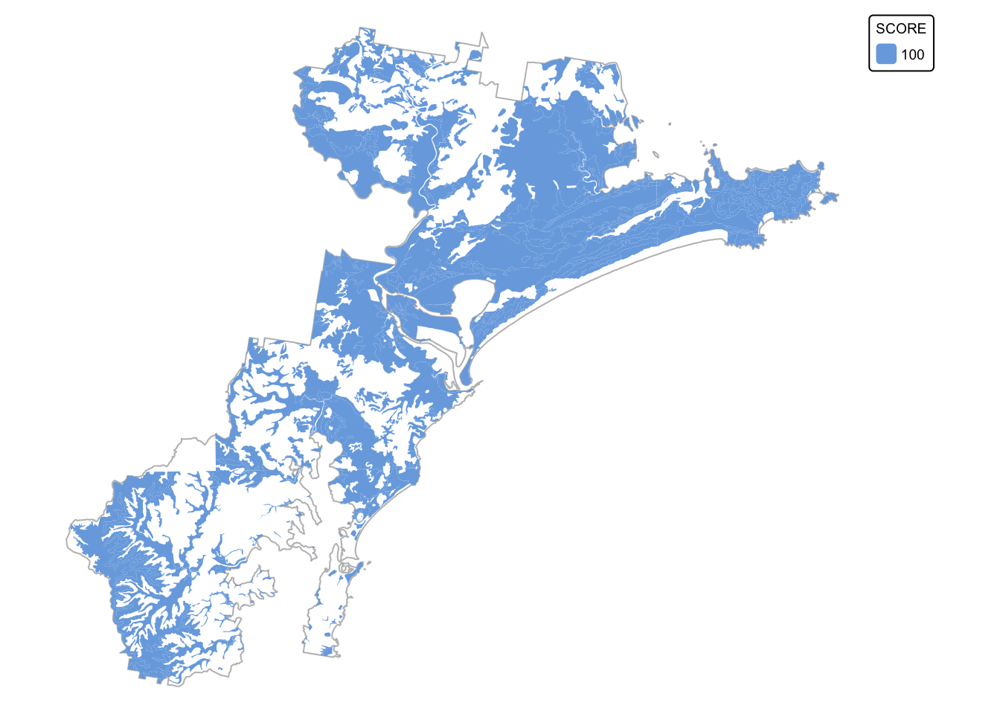
The last step will convert soil_landscapes_filter to a
raster. This will be our final soil fertility layer:
# Convert the sf object to a terra SpatVector
soil_landscapes_terra <- vect(soil_landscapes_filter)
# Read in the target SpatRaster that defines the extent and resolution
# Here we read in one of the Eco Logical geoTIFFs provided
target_raster <- rast("./data/data_koala/raster/allveg_patch_size.tif")
# Rasterise the polygons using an attribute field
soil_landscapes_rast <- rasterize(soil_landscapes_terra, target_raster, field = "SCORE")
# Convert all NA (no data) values in the new raster to 0
soil_landscapes_rast[is.na(soil_landscapes_rast)] <- 0
# Plot data for quick visual inspection
soils_map4 <- tm_shape(soil_landscapes_rast) +
tm_raster(col.scale = tm_scale_categorical()) +
tm_layout(frame = FALSE, legend.text.size = 0.6, legend.title.size = 0.6)
# Plot study area bnd on top
soils_map4 + tm_shape(hunter_bnd) + tm_borders("white")
## SpatRaster object downsampled to 3018 by 3314 cells.
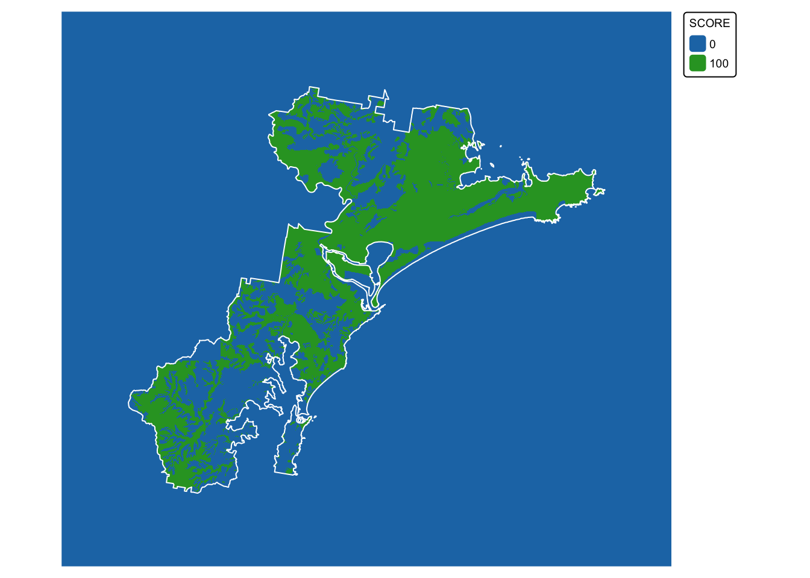
Layer 2: Koala sightings
Load the koala sightings dataset (koala_sightings):
# Read in shapefile
koala_sightings <- read_sf("./data/data_koala/vector/koala_sightings.shp")
# Print the first rows of the soil landscapes layer
head(koala_sightings)
The koala sightings layer contains 20 attribute fields, with the last
one (DateRank) containing two values: ‘75’ for all
sightings made before 1985, and ‘100’ for all koala sightings dated 1986
and later. Data on sightings reported before 1985 are considered less
reliable than those made after, explaining the lower rank.
Plot the koala_sightings layer, colouring each point
according to the value of the DateRank column:
# Plot study area bnd first as it has larger extent
koala_map <- tm_shape(hunter_bnd) + tm_borders("black")
# Add koalas
koala_map + tm_shape(koala_sightings) +
tm_dots(size = 0.2, fill = "DateRank", fill.scale = tm_scale_categorical()) +
tm_layout(frame = FALSE, legend.text.size = 0.5, legend.title.size = 0.5)
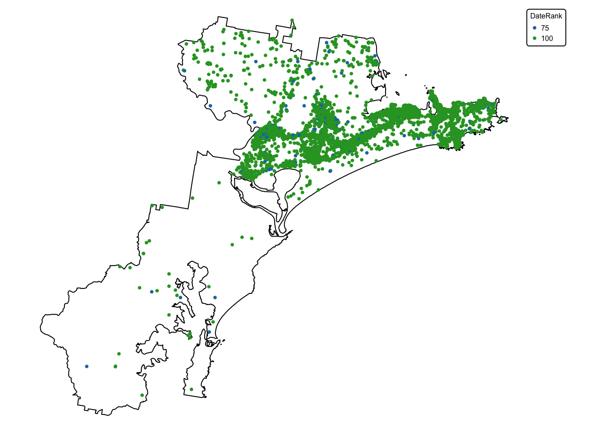
In the next step, we drop all columns except DateRank
and create a 100 m buffer around each point using
st_buffer(). Next, we dissolve the layer using
st_union() so that all features are grouped together based
on their value for DateRank. Lastly, we rename
DateRank to SCORE.
# Retain only the "DateRank" attribute column (geometry is preserved automatically)
koala_sightings <- koala_sightings %>%
select(DateRank)
# Create a 100m buffer around each point
koala_buffers <- st_buffer(koala_sightings, dist = 100)
# Dissolve (union) buffers by the DateRank field and rename field to SCORE
koala_buffers_dissolved <- koala_buffers %>%
group_by(DateRank) %>%
summarise(geometry = st_union(geometry), .groups = "drop") %>%
rename(SCORE = DateRank)
# Plot study area bnd first as it has larger extent
koala_map2 <- tm_shape(hunter_bnd) + tm_borders("black")
# Add koalas
koala_map2 + tm_shape(koala_buffers_dissolved) +
tm_fill(fill = "SCORE", fill.scale = tm_scale_categorical()) +
tm_layout(frame = FALSE, legend.text.size = 0.5, legend.title.size = 0.5)
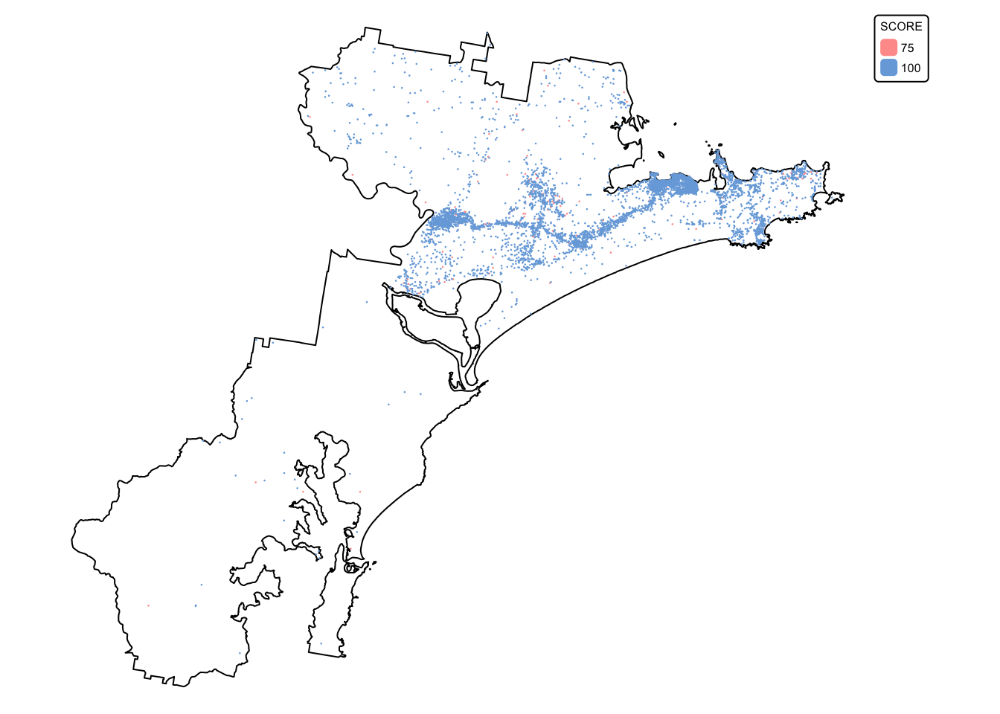
We are now ready to convert the koala buffer layer
(koala_buffers_dissolved) to a raster with scores:
# Convert the sf object to a terra SpatVector
koala_buffers_terra <- vect(koala_buffers_dissolved)
# Read in the target SpatRaster that defines the extent and resolution
# Here we read in one of the Eco Logical geoTIFFs provided
target_raster <- rast("./data/data_koala/raster/allveg_patch_size.tif")
# Rasterise the polygons using an attribute field
koala_buffers_rast <- rasterize(koala_buffers_terra, target_raster, field = "SCORE")
# Convert all NA (no data) values in the new raster to 0
koala_buffers_rast[is.na(koala_buffers_rast)] <- 0
# Plot data for quick visual inspection
koala_map3 <- tm_shape(koala_buffers_rast) +
tm_raster(col.scale = tm_scale_categorical()) +
tm_layout(frame = FALSE, legend.text.size = 0.6, legend.title.size = 0.6)
# Plot study area bnd on top
koala_map3 + tm_shape(hunter_bnd) + tm_borders("white")
## SpatRaster object downsampled to 3018 by 3314 cells.
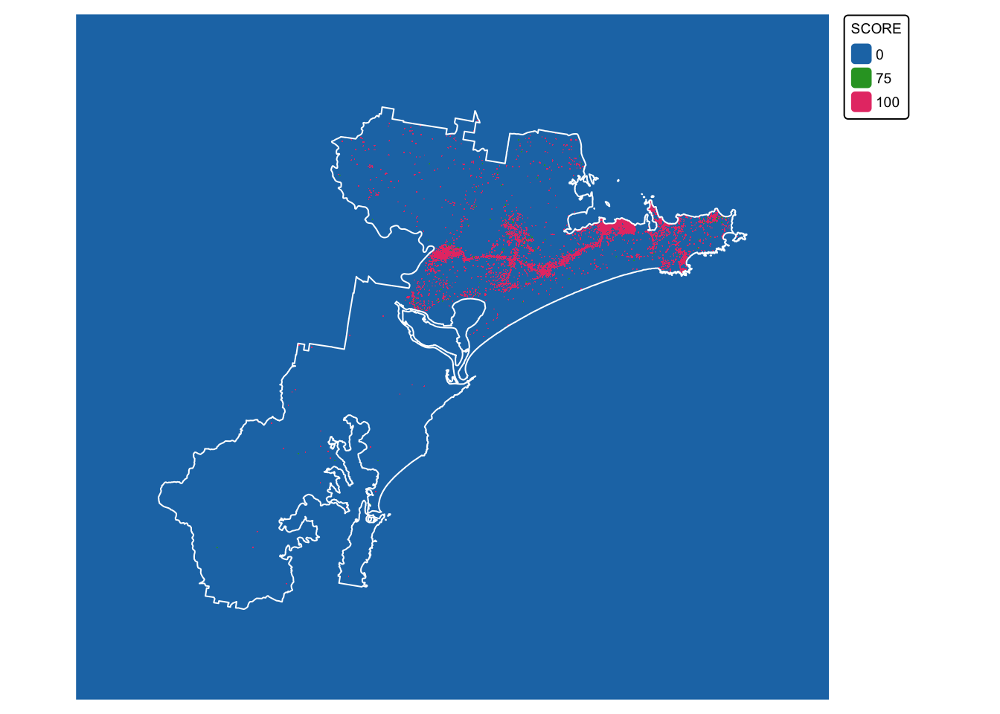
Layer 3: Distance to infrastructure
For our final layer, we need to calculate a 300 m buffer around
infrastructure that may represent a barrier for koala movement, and
assign a score of 100 to all areas that are beyond this 300 m buffer.
Here, we will consider the following types of infrastructure as barriers
to koala movement: roads, railway corridors, and built-up areas,
including those classified as developed land even if they lack actual
buildings.
Load the relevant datasets, namely, built_areas,
roads, and railways:
# Read in shapefiles
built_areas <- read_sf("./data/data_koala/vector/built_areas.shp")
roads <- read_sf("./data/data_koala/vector/roads.shp")
railways <- read_sf("./data/data_koala/vector/railways.shp")
# Plot bnd on top for larger extent
bnd_map <- tm_shape(hunter_bnd) + tm_borders("black") + tm_layout(frame = FALSE)
# Plot the three layers on the same map
built_map <- bnd_map + tm_shape(built_areas) + tm_fill("lightgray")
roads_map <- built_map + tm_shape(roads) + tm_lines(col = "red", lwd = 1, lty = "solid")
roads_map + tm_shape(railways) + tm_lines(col = "black", lwd = 2, lty = "solid")
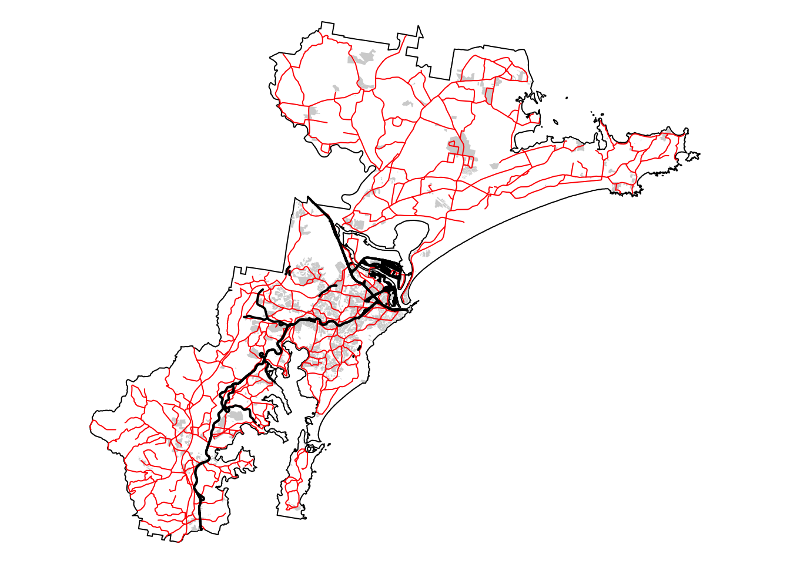
The roads layer contains all road types, including minor
roads and tracks, and not all of these will constitute a barrier for
koala movement. For this reason we need to clean up this layer before
proceeding with the calculation of the buffers.
Print a list of the roads layer attribute table
columns:
## [1] "OBJECTID" "FEATTYPE" "NAME" "CLASS" "FORMATION"
## [6] "NRN" "SRN" "FEATREL" "ATTRREL" "PLANACC"
## [11] "SOURCE" "CREATED" "RETIRED" "PID" "SYMBOL"
## [16] "FEATWIDTH" "TEXTNOTE" "SHAPE_Leng" "geometry"
There is a column called CLASS and this will contain the
various road types. Print a list with the entries in this column:
## [1] "Minor Road" "Track" "Secondary Road" "Principal Road"
## [5] "Dual Carriageway"
From the above, we can see that we have six road types, including
“Minor Road” and “Track”. The next chunk of code drops all roads with
these two classifications:
# Create list of CLASS values of interest
road_class <- c("Secondary Road", "Principal Road", "Dual Carriageway")
# Filter data and extract roads of interest
roads_filtered <- filter(roads, CLASS %in% road_class)
# Repeat the previous map to see roads remaining
# Plot bnd on top for larger extent
bnd_map <- tm_shape(hunter_bnd) + tm_borders("black") + tm_layout(frame = FALSE)
# Plot the three layers on the same map
built_map <- bnd_map + tm_shape(built_areas) + tm_fill("lightgray")
roads_map <- built_map + tm_shape(roads_filtered) + tm_lines(col = "red", lwd = 1, lty = "solid")
roads_map + tm_shape(railways) + tm_lines(col = "black", lwd = 2, lty = "solid")
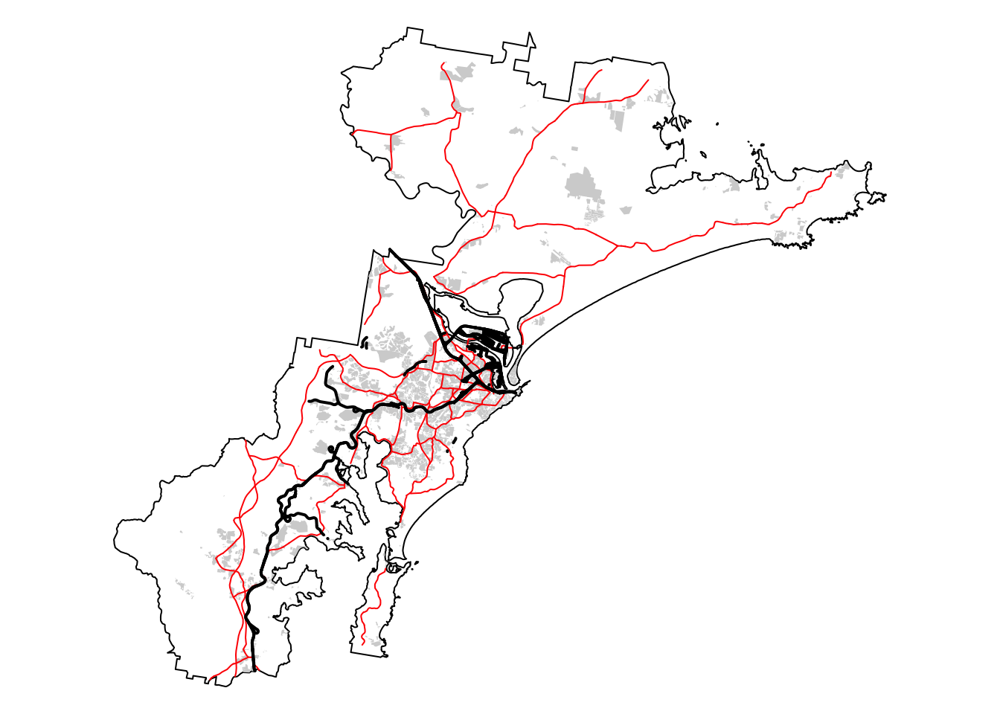
Next, drop all attribute fields, create a new SCORE
field for each layer, and populate with the value zero:
# Create new sf objects that retain only the geometry column
# This effectively drops all other attribute fields
built_areas_clean <- st_sf(geometry = st_geometry(built_areas))
roads_clean <- st_sf(geometry = st_geometry(roads_filtered))
railways_clean <- st_sf(geometry = st_geometry(railways))
# Add a new attribute field called SCORE and populate it with 0 for each feature
built_areas_clean$SCORE <- 0
roads_clean$SCORE <- 0
railways_clean$SCORE <- 0
# Optionally, reorder the columns so that SCORE comes before the geometry column
built_areas_clean <- built_areas_clean[, c("SCORE", "geometry")]
roads_clean <- roads_clean[, c("SCORE", "geometry")]
railways_clean <- railways_clean[, c("SCORE", "geometry")]
Create the 300 m buffer and dissolve features:
# Create a 300m buffer around each point
built_buffers <- st_buffer(built_areas_clean, dist = 300)
roads_buffers <- st_buffer(roads_clean, dist = 300)
railways_buffers <- st_buffer(railways_clean, dist = 300)
# Dissolve (union) buffers by the SCORE field
built_buffers_dissolved <- built_buffers %>%
group_by(SCORE) %>%
summarise(geometry = st_union(geometry))
roads_buffers_dissolved <- roads_buffers %>%
group_by(SCORE) %>%
summarise(geometry = st_union(geometry))
railways_buffers_dissolved <- railways_buffers %>%
group_by(SCORE) %>%
summarise(geometry = st_union(geometry))
# Join the three layers together and dissolve again
# Combine the sf objects using rbind (works if they have identical column names)
infrastructure <- rbind(built_buffers_dissolved,
roads_buffers_dissolved,
railways_buffers_dissolved
)
# Dissolve (union)
infrastructure_dissolved <- st_union(infrastructure)
# Convert the unioned geometry back into an sf object
infrastructure_sf <- st_sf(geometry = infrastructure_dissolved)
# Add SCORE field and sort attribute columns
infrastructure_sf$SCORE <- 0
infrastructure_sf <- infrastructure_sf[, c("SCORE", "geometry")]
# Plot bnd
bnd_map <- tm_shape(hunter_bnd) + tm_borders("black") + tm_layout(frame = FALSE)
# Add infrastructure
bnd_map + tm_shape(infrastructure_sf) +
tm_fill("gray") +
tm_layout(frame = FALSE)
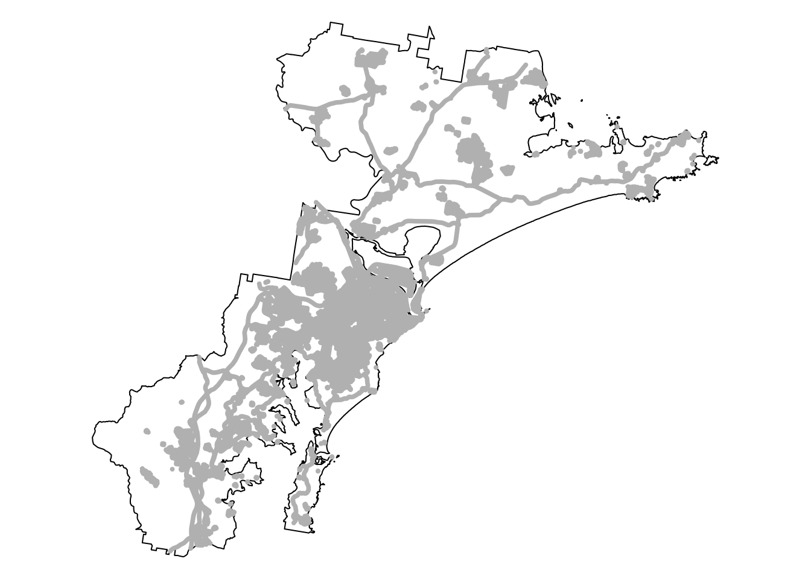
We are now ready to convert the infrastructure buffer layer
(infrastructure_dissolved) to a raster with scores:
# Convert the sf object to a terra SpatVector
infrastructure_terra <- vect(infrastructure_sf)
# Read in the target SpatRaster that defines the extent and resolution
# Here we read in one of the Eco Logical GeoTIFFs provided
target_raster <- rast("./data/data_koala/raster/allveg_patch_size.tif")
# Rasterise the polygons using an attribute field
infrastructure_rast <- rasterize(infrastructure_terra, target_raster, field = "SCORE")
# Convert all NA (no data) values in the new raster to 300
infrastructure_rast[is.na(infrastructure_rast)] <- 300
# Plot data for quick visual inspection
infra_map <- tm_shape(infrastructure_rast) +
tm_raster(col.scale = tm_scale_categorical()) +
tm_layout(frame = FALSE, legend.text.size = 0.6, legend.title.size = 0.6)
# Plot study area bnd on top
infra_map + tm_shape(hunter_bnd) + tm_borders("white")
## SpatRaster object downsampled to 3018 by 3314 cells.
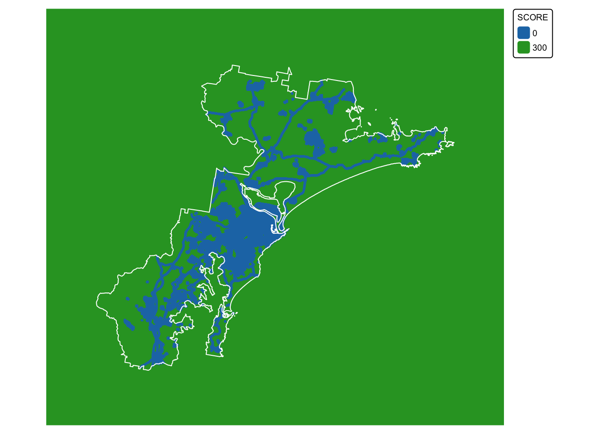
We have now calculated the three missing final layers:
- \(soil\) : soil fertility. This is
layer
soil_landscapes_rast
- \(koala\) : buffered koala
sightings. This is layer
koala_buffers_rast
- \(urb\) : distance to
infrastructure. This is layer
infrastructure_rast